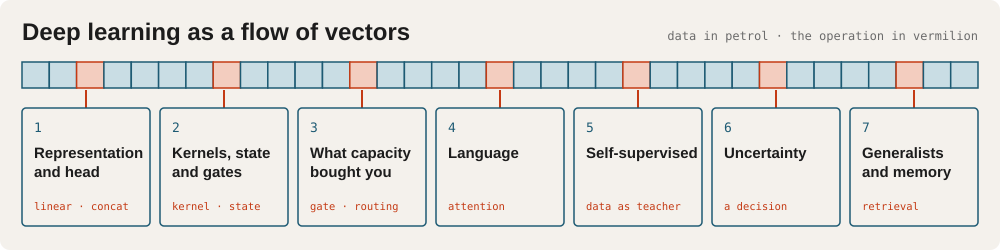

MADS-ML · Machine Learning
The course pages
Seven lessons, one tensor that passes through seven operations. Per lesson: the slides, the learning goals in pictures, your study, the homework on learn.pttrn.io and the notebooks on GitHub.

Per lesson
-
1Representation and head
-
2Kernels, state and gates
-
3What did that capacity buy you
-
4Language
-
5Self-supervised learning
-
6Uncertainty
-
7Generalists and memory
For every lesson
- DAV recap
- What this course takes for granted from Data Analysis & Visualisation.
- Notation
- A reference card for tensor shapes, composition, diagrams, gradients and the GRU.
- Set up
- The tools on your machine and the course repository, walked through with an assistant.